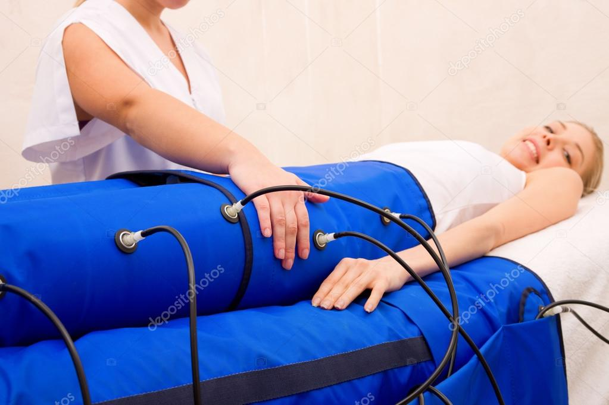

Presion neumatica controlada que beneficia todo el cuerpo, con especial efecto sobre los sistemas linfatico y circulatorio.

La presoterapia aplica presion de aire a traves de un traje especializado. El proceso de compresion y relajacion beneficia todo el cuerpo, centrando su efecto en los sistemas linfatico y circulatorio.
La presion, frecuencia, velocidad y duracion se ajustan a las necesidades individuales de cada persona, consiguiendo resultados mas eficaces que el masaje manual convencional.
Para obtener resultados optimos en reduccion de celulitis y grasa, se recomienda un ciclo de 10 sesiones:
La presoterapia es especialmente util en la recuperacion postparto, despues del ejercicio intenso, en la recuperacion post-liposuccion y para la mejora de la figura.